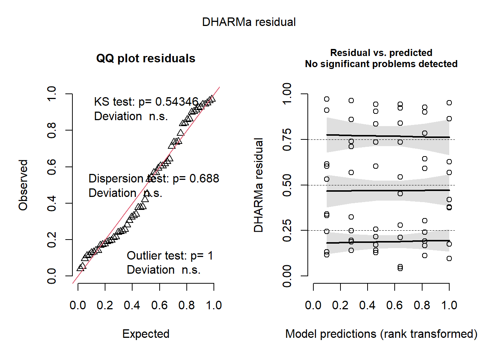

# Removing Controlvivo2 <- vivo %>%filter(treatment !="Control")m <-lm(lesion ~ cultivar*treatment*time, data = vivo2)Anova(m) #First, we checked if the interaction of cultivar*treatment*time was significant: It was not.
m1 <-lm(lesion ~ cultivar*treatment, data = vivo2)Anova(m1)
Anova Table (Type II tests)
Response: lesion
Sum Sq Df F value Pr(>F)
cultivar 172.4 1 1.1961 0.2790
treatment 84.5 2 0.2932 0.7471
cultivar:treatment 59.4 2 0.2060 0.8145
Residuals 7782.5 54
check_normality(m1)# The data approximately follow a normal distribution. Let's consider a significance level of p=0.05.
Warning: Non-normality of residuals detected (p < .001).
check_heteroscedasticity(m1)
OK: Error variance appears to be homoscedastic (p = 0.129).
library(DHARMa)plot(simulateResiduals(m1))
Transformando os dados com log
m2 <-lm(log(lesion) ~ cultivar*treatment, data = vivo2)# Analysis of variance (ANOVA) for model m1library(car)Anova(m2)
Anova Table (Type II tests)
Response: log(lesion)
Sum Sq Df F value Pr(>F)
cultivar 1.497 1 1.6849 0.1998
treatment 0.835 2 0.4701 0.6275
cultivar:treatment 0.641 2 0.3609 0.6987
Residuals 47.984 54
check_normality(m2)# The data approximately follow a normal distribution. Let's consider a significance level of p=0.05.
Warning: Non-normality of residuals detected (p = 0.011).
check_heteroscedasticity(m2)
OK: Error variance appears to be homoscedastic (p = 0.559).
library(DHARMa)plot(simulateResiduals(m2))

#poderia usar tbm o glm, ao inves de lm com transformação, ajuste do modelo linear não generalizadomglm <-glm(lesion ~cultivar*treatment, data = vivo2,family = Gamma) #tamanho da lesão é um valor sempre maior que 0 e tem uma distribuição gamaplot(simulateResiduals(mglm))
Analysis of variance (ANOVA) showed that cultivar (p = 0.19), fungicide treatment (p= 0.67), and the interaction between cultivar and treatment had no significant effect on lesion size (p = 0.69). Most of the variability was attributed to residues (Sum Sq = 47.984).